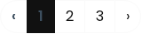
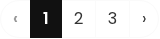
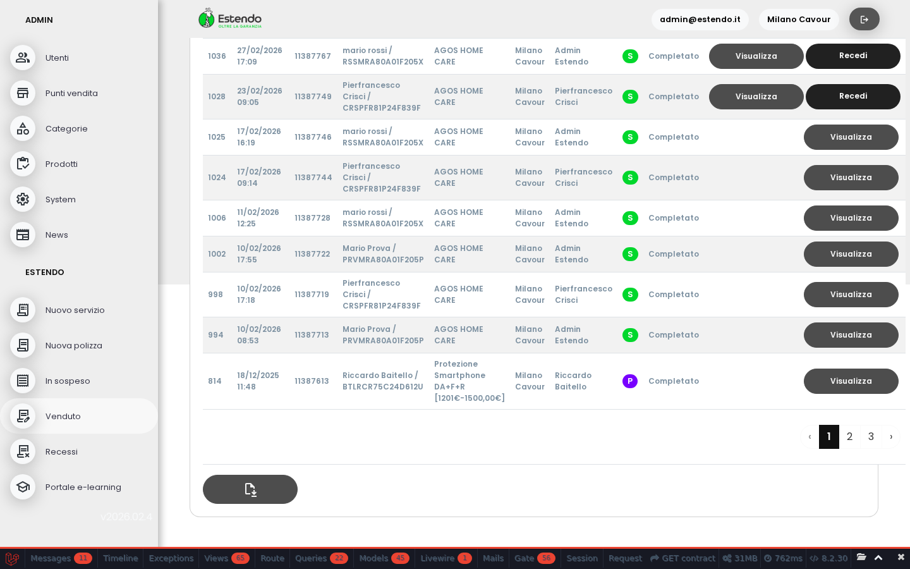

La paginazione e il pulsante di esportazione ora si leggono correttamente. I numeri di pagina e l'icona CSV hanno il contrasto giusto rispetto allo sfondo.
In fondo alla lista contratti, i numeri per sfogliare le pagine (1, 2, 3...) erano praticamente invisibili: testo grigio scuro su sfondo nero. Il numero della pagina corrente era il peggiore — non si vedeva proprio.
Ora la pagina corrente ha testo bianco su sfondo scuro (ben visibile), e gli altri numeri sono scuri su sfondo bianco (leggibili normalmente).


Il pulsante per scaricare la lista contratti in formato CSV (il file con l'icona “salva”) aveva l'icona dello stesso colore dello sfondo del bottone — si vedeva appena.
Ora l'icona eredita il colore chiaro del bottone, quindi si vede chiaramente su sfondo grigio scuro.
Ecco come appare la pagina contratti nella sua interezza dopo le correzioni.

Server: Cloudways Athena (staging)
File: resources/views/components/layouts/head-style.blade.php
Causa root: Il tema greyscale usa --color-green: #111 (quasi nero) come colore accent. I selettori CSS della paginazione usano var(--color-green) per il testo, risultando in testo nero su sfondo bianco (accettabile) e testo grigio su sfondo nero per la pagina attiva (illeggibile).
Specificità: Il selettore #app-body span (specificità alta) sovrascriveva il color: #fff di .page-link.active, forzando color: #3d4f5f (grigio scuro) su sfondo #111 (quasi nero).
Valori prima del fix:
Valori dopo il fix:
Fix applicato:
Variabili CSS custom (da .env):
Nota: Il fix usa !important per vincere la specificità del selettore #app-body span. La soluzione definitiva sarebbe consolidare tutto in SCSS con specificità corretta (TODO esistente).